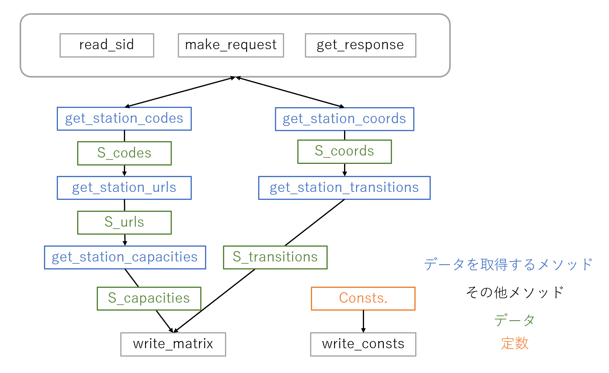

1. シミュレーションの用件¶
1.1. 全体の流れ¶
- データの取得，パラメータの決定
- シミュレーションの実行
- 結果の書き出し
この流れをステーションなどに関する様々な条件下で行うため全体としての繰り返し処理が必要となる． だがそれでは冗長なコードとなってしまうため，Simulationクラスを定義し，条件やパラメータを引数として条件ごとのインスタンスを作成． インスタンスメソッドとしてシミュレーションを実行という形をとる．
1.2. 詳細な流れ¶
1.2.1. データの取得とパラメータの決定¶
まず，必要なデータは以下の通りである． これらは自分で値を設定するのとは異なり，APIやスクレイピングを通して実際のデータを取得する必要がある．
- ステーション
- コード･･･ステーション識別のため
- 緯度経度･･･APIで距離や移動時間を計算するため
- ステーションURL･･･APIでは得られない情報をスクレイピングで取得するため
- キャパシティ＝利用可能台数＝駐車可能台数･･･RDFやRDEを計算するため
- ステーション間の移動時間･･･移動コストのため
ただし，変数名に関しては以下のルールに従う．
- stationの接頭辞としてSを使用
- costの接頭辞としてCを使用
- 大文字で始まる変数名は行列(二次元配列)
- 定数はすべて大文字のスネークケース
これらを考慮すると上記データの変数名および型は以下のようになる．
| 項目 | 変数名 | 変数型 |
|---|---|---|
| 識別コード | S_codes | [str] |
| 緯度経度 | S_coords | [(float, float)] |
| ステーションURL | S_urls | [str] |
| キャパシティ | S_capacities | [int] |
| 移動時間 | S_transitions | [[float]] |
また，これらとは別に必要なパラメータは以下の通りである．
- パラメータ
- ステーションの数
- 試行時間･･･シミュレーションを実行する時間
- 需要行列･･･いつ，どこから，どこへ，人が移動するかを表す行列
- 人件費･･･再配置を行う従業員のコスト
- 燃費･･･移動コストのため
- 利用料金･･･利用可能時のコスト計算のため
- 従業員の総数･･･再配車を行う従業員の総数
同様に各種パラメータの変数名は以下のとおりである．
| 項目 | 変数名 |
|---|---|
| ステーション数 | NUMBER_OF_STATION |
| 試行時間 | TIME |
| 需要行列 | Demands |
| 従業員コスト | C_EMPLOYEE_PER_DAY |
| 燃費 | FUEL_CONSUMPTION |
| 利用料金 | PRICE |
| 従業員の総数 | NUMBER_OF_EMPLOYEE |
これらのデータを取得するためのメソッド名を以下に示す．
| 項目 | メソッド名 |
|---|---|
| 識別コード | get_station_codes |
| 緯度経度 | get_station_coords |
| ステーションURL | get_station_urls |
| キャパシティ | get_station_capacities |
| 移動時間 | get_station_transitions |
本来は上記メソッドに組み込まれていたが重複部分が存在するため， 別に書き出されたメソッドは以下のとおりである．
| 項目 | メソッド名 |
|---|---|
| シークレットID取得 | read_sid |
| APIリクエスト発行 | make_request |
| APIレスポンス受取 | get_response |
| csv書き出し | write_matrix |
| 定数書き出し | write_consts |
ステーションの諸データについては一括でAPIで取得することができない． 以下に上記のメソッド群を使用した詳細な取得手順を示す．
- ある地点を中心とした円形エリア内に存在する ステーションの識別コードと緯度経度 をAPIから取得する．
- エリア内に均等に分布するようそれらステーション一覧から，利用するステーションの数を基にしてランダムにステーションを抽出する．
- 抽出されたステーションのキャパシティを取得するため識別コードを基にスクレイピングを実行する．
- これらのデータをデバッグ用にCSVエクスポート，シミュレーション用にインスタンス変数に格納する．
これらの処理を図で表すと以下のようになる．
{kind=link}
1.2.2. シミュレーションの実行¶
- 与えられたステーションデータ